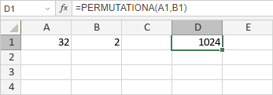

PERMUTATIONA funkcija
PERMUTATIONA funkcija je jedna od statističkih funkcija. Koristi se za vraćanje broja permutacija za dati broj objekata (sa ponavljanjima) koji mogu biti izabrani iz ukupnog skupa objekata.
Sintaksa
PERMUTATIONA(broj, broj_izabranih)
PERMUTATIONA funkcija ima sledeće argumente:
| Argument | Opis |
|---|---|
| broj | Broj elemenata u skupu, numerička vrednost veća ili jednaka 0. |
| broj_izabranih | Broj elemenata u jednoj permutaciji, numerička vrednost veća ili jednaka 0 i manja od broj. |
Napomene
Kako primeniti PERMUTATIONA funkciju.
Primeri
Slika ispod prikazuje rezultat koji vraća PERMUTATIONA funkcija.
